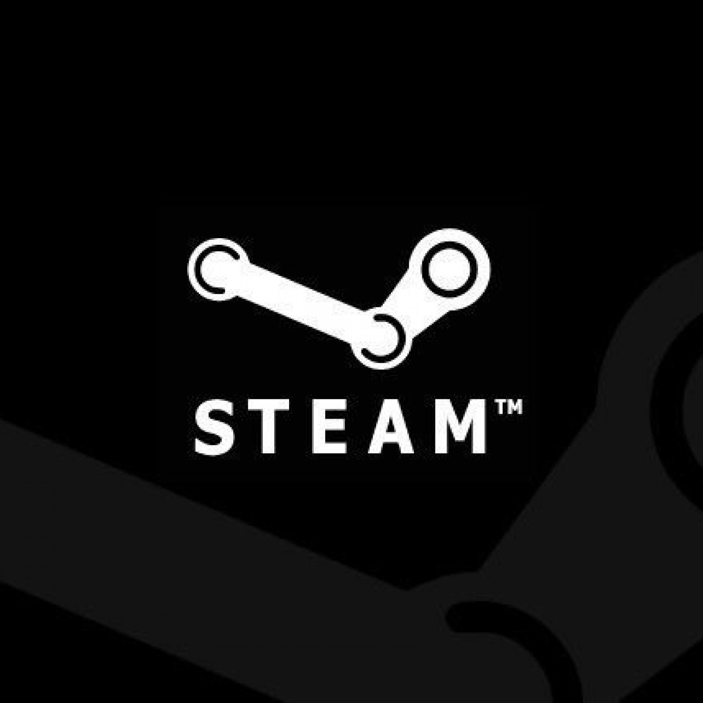

Hei sinn e puer Saachen déi ech gär presentéieren!
Sennheiser HD600

Fabrikatioun huet am Joer 1997 ugefaang, dëst legendäre Modell bleift nach ëmmer ee vun de beschte Kopfhörer um Maart, mat extrem neutralen Toun a beandrockend Genauegkeet!
Präis:
299.99€
Pro-Ject Debut Recordmaster

Gemaach vum Pro-Ject, mécht dës Dréit ofgepëtzt mat allen 3 RPM Geschwindegkeete a kënnt och mat enger anstänneg Patroun. Dofir säin Numm, et ass fäeg d'Musek ze digitaliséieren iwwer sech eleng ze spillen!
Präis:
399.99€
Arrinera Hussarya

Gemaach vun engem polneschen Autos Hiersteller, den Hussarya ass eng Supercar déi den Winged Hussars zënter dem 17. Joerhonnert hommt! Et huet méi wéi 650bhp, kann iwwer 320km / h fueren a benotzt e V8 Motor.
Präis:
~199999.99€
Samsung Galaxy S10+

Verëffentlecht am 2019 huet dëse Smartphone ee vun de bescht gesicht Displays um Maart, mat haart a knusprechege Stereo Spriecher an enger Kamera mat 2x Opt. zoomen an huet en ultra Wäitwénkelobjektiv. Den Affichage ass 6,4 ", mécht et exzellent fir och Filmer ze kucken!
Präis:
128GB - 749.99€
Gigabyte Geforce RTX 2070 Windforce 8G

Nvidia's High-End RTX2070-2080Ti Opstellung kënnt RTX-aktivéiert, mat extrem gudder Leeschtung iwwerall. Mat 2304 CUDA Cores a Blitz-séier GDDR6 Gedächtnis, ass dës GPU eegent fir 4K Gaming och!
Präis:
449.99€
Clearscreen ICL 4000 spray

Komesch datt dës Saach heihinner komm ass, awer lauschtert no! Dëse Spray ass fir d'Leit déi ni de Stëbs vun hire Moniteure botzen, unzehuelen datt si hir Hänn a Gesiicht duerch dat aus Grënn këmmeren. Egal wéi, ech fannen et extrem nëtzlech, och fir Telefonen. Dir nennt se!
Präis:
8.99€
Hei sinn e puer Spiller déi ech gär iwwerschaffen!
Terraria
"Dig, kämpfen, entdecken, bauen! Näischt ass onméiglech an dësem Action-gepackten Abenteuer-Spill."
Verëffentlecht am Mee 16, 2011, dréit dëst Spill ronderëm an enger zoufälleg generéierter 2D Welt stattfonnt wou Dir Är eege Basis opbaut an ... Iech selwer, well Dir mat verschiddenen Moben ze këmmeren musst forcéiert Iech ze läschen mat wat Dir hutt. Gitt duerch 20+ Biome a entdeckt vill Schleisen fir Är Charakter z'erhéijen!
Wëllt Dir relax a friddlech Zäiten am Géigesaz zu all ustrengenden Kampf? Bereet Är Fëschereiwen a Gaart vir a fänkt u e Schatz amplaz ze fangen!
Also fir meng Meenung iwwer d'Spill, géif ech soen et ass en exzellenten Zäitwäschter! Dëst ass meeschtens wéinst der wéi einfach modifizéierbar d'Spill ass, well et e 32-Bit 2D-Spill ass. An enger mod-DLC genannt TModLoader gëtt et souguer e dedizéierten Mod Browser deen Modding e puer Mol méi bequem mécht wéi d'Modecing Minecraft!
Och ouni d'Benotzung vu Mods, ass et ëmmer nach Stonnen Spaass, awer wann Dir ugefaang langweilen ze sinn nodeems Dir méi wéi 500 Stonnen am Spill verbruecht hutt, da recommandéieren ech staark mat Mods ze spillen; modding kann Iech op d'mannst 2000 méi Stonnen maachen ouni sech langweilen!
Also als Uerteel, géif ech perséinlech dëst Spill en 8,75/10 bewerten. Dëst Spill ass op kee Fall perfekt, awer ass extrem lëschteg. Probleemer leien a punkto Leeschtungsbegrenzungen, well et net vill profitéiert vun High-End GPUs an CPUs, wat d'Framere vum Spill am Fall vun Lag Spikes an sou weider ausbalancéiere kéinten.
Präis: 9.99€
Verfügbar op:
Gratis ze spillen
Verfügbar op:
Warframe
2022/5000"Warframe ass eng kooperativ gratis-ze-spillen Drëttpersoun online Handlungs-Spill an enger entwéckelter Sci-Fi Welt."
Venture duerch de ganze Sonnesystem an engem high-tech, biomechanesche Kierper deen fir Kampf erstallt gëtt: e Warframe. Dëse Space-Ninja RPG-Looter-Shooter-Action-Spill huet alles wat gebraucht fir ze begeeschteren an ze engagéieren.
Als en online Spill hutt Dir déi avantagéis Optioun mat 3 aner Spiller zesummenzeschaffen fir de Rütten ze plécken a sech ze pompelen ouni eppes ofzeginn.
Wann Dir haasst Suen op eng bezuelte Spillvalutioun ze verbréngen, da gëtt et déi staark empfohlene Optioun fir um Warframe Maart matzemaachen, wou Honnerte an Dausende Spiller verkaaft Wueren wéi Mods kafen, déi geduecht sinn fir Äert Gang ze upgraden, a vill méi Saachen fir eppes wat Platin genannt gëtt, an där Dir 50 hutt wann Dir mat engem Kont ufänkt!
Maacht Iech keng Suergen iwwer Scammers, well wann de Spiller en neien Element auswiesselt oder all Ännerung an hirem Handelsartikelraum mécht, musst Dir nach eng Kéier op d'Preide drécken.
Also fir menger Meenung ass dëst Spill just wéi Terraria, am Sënn datt et extrem iwwerzeegend a lëschteg Gameplay huet fir net nëmmen Hardcore Spiller, awer och Casual Spiller. Wéi mat Grafiken ass d'Spill ganz gutt optimiséiert, well 3840x2160 op menger RTX 2070 GPU op konstante 60 FPS op ultra Astellunge erreecht, net implizit datt et op engem Machintosh lafen kann! Wann Dir an e realistesche Spillspill sidd a net gär wann den AI domm ass, sidd Dir liicht enttäuscht. Wann Qualitéitsquests net vun Ärer gréisster Wichtegkeet sinn an zimlech super Spillsaach, dann ass dat Spill fir Iech!
Ech géif dëst Spill en bescheidenen 8,5/10 bewerten.
Robocraft
"Build wahnsinneg, voll personaliséierbar Roboter Kampf Gefierer déi am frei-to-play-Action-Spill Robocraft féieren, hänke, goen a fléien. Fügt Waffen aus der Zukunft a spréngt am Fuert Sëtz wéi Dir Är Schafung an Kampf géint aner Spiller online maacht!"
Dës Beschreiwung hei uewen seet et alles: Dir sidd an enger gigantescher Garage wou Dir Är eege onbemannt Robotereverkéier späichere kënnt.
Maacht mat an engem Foyer wou Dir mat an eng Schluechtfeld mat villen Hiwwele, Verstoppe, Plattformen a Brécke etc gedriwwe gëtt fir Är Bewegungen a Richtung Victoire ze plangen an ze plangen!
Gitt an de Roboter Shop wou Dir dausende Kreatiounen, déi vun anere Spiller gemaach goufen, kucken a se kaafen. Niveau Är Waffen erop andeems Dir se benotzt an da upgrade fir méi Schued.
Fir meng Meenung, ech spieren datt d'Optimiséierungen a Grafikastellungen besser kéinte sinn, awer et ass net e Spill dat fir déi zwéngendst Grafik geduecht ass, awer dëst Spill ass erstaunlech fir seng Gesamtidee a Konzept An. D'Qualitéit vum Spillspill mécht och fir déi exzellent Iddi aus. Meng perséinlech Liiblingsart vu Roboter ass e Spinnbecher Schnettercher deen Helikopter Rotoren benotzt fir ze fléien, meeschtens well et ass effektiv ganz effizient a super Spaass fir ze spillen wéi.
De Robotere bauen ass praktesch: Dir kënnt Äert Build spigelen, sou datt alles wat Dir op enger Säit baut, op der anerer Säit replizéiert gëtt wéi wann Dir um Roboter vu béide Säite gläichzäiteg schafft! Dëst spuert Zäit a verhënnert d'Asymmetrie.
Als Uerteel ginn ech vill Punkten fir d'Spillsaach an dat ganzt Konzept selwer, awer e puer Punkte fort fir d'Sub-Par Grafik Astellungen an Optimisatiounen. Dëst Spill huet en 7,75/10.
Gratis ze spillen
Verfügbar op:
Präis: 19.99€
Verfügbar op:

Rocket League
"Rocket League ass eng héich ugedriwwen Hybrid vun Arcade-Style Fussball a Gefierer Mayhem mat einfach verständleche Kontrollen a flësseger, physik-ugedriwwener Konkurrenz. Rocket League enthält Casual a kompetitiv Online Mätscher, e vollstännege offline Season Mode, spezielle "Mutators", déi Iech d'Regele ganz änneren, Hockey an Basketballinspiréiert Extra Modi, a méi wéi 500 Billiounen méiglech kosmetesch Personnalisatiounskombinatiounen."
High-powered ass vläicht net dee beschte Wee fir d'Spill ze beschreiwen, awer éischter de Fait datt de Spillraum séier ass, well Dir wuertwiertlech en Rakéit-ugedriwwenen Auto duerch e grousse Bounekugel leeft an en oppent Zil. Dëst ass eng dreiwend Kraaft fir e puer verréckte Spill dat Iech gezwonge gëtt fir souguer Är Energiedrénks op d'Säit ze setzen.
Wat ass soss nach ze soen? Et gëtt en zousätzleche kompetitiven Gamemode genannt Dropshot, deen alles drëm geet den Uruff géint de Buedem vun Ärem Géigner ze schueden fir et ze beschiedegen. Passt op datt de Feind de Ball net beréiert éier en landen, well dat wäert Schued verhënneren. Et ass extrem flott ze spillen.
Op meng perséinlech Meenung fannen ech et e bëssen traureg datt et an 32-Bit leeft, an datt d'Spill e bësse schleefend a lues an 4K Opléisung fillt, aus mengen Erfarungen. Aner wéi dat, d'Physik vum Spill mécht op fir e grousse Fäegkeetsbaum vu Bewegungen an Techniken fir ze üben an ze bekämpfen. Et bréngt d'Konkurrenz op an ass e super Spill fir E-Sports. Ech wäert dëst Spill en allgemengen 9,25/10 bewäerten, net mäi perséinleche Problem e groussen Deal maachen well et net wierklech definéiert wéi super d'Spill ass ze spillen!